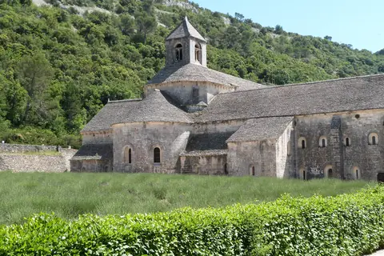
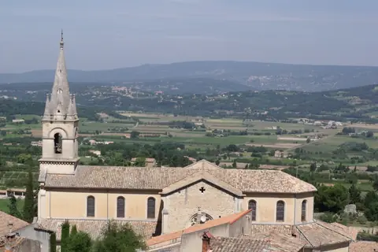
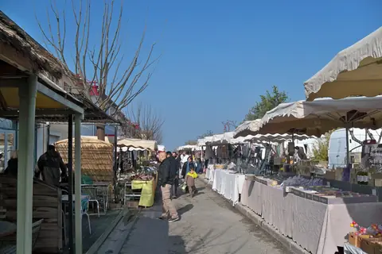
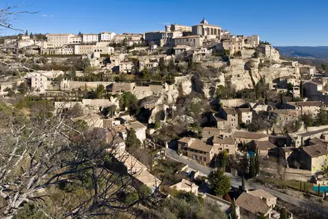
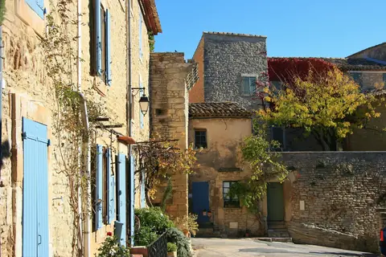
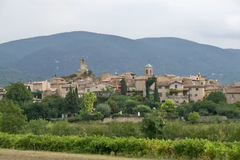

{kind=link}

Abbaye de Sénanque
1148년에 세워졌다.
| 운영시간 | 목요일 시장 08:00~13:00(Parking Rossignol·rue Marcellin Poncet). Maison de la Truffe et du Vin 월·화 10:00~19:00, 금 10:00~22:00, 토·일 10:00~19:00 |
|---|---|
| 휴무 | 마을 상시 개방·휴무 없음. 장날은 목요일(4월 중순~10월 말) — 그 외 요일 시장 없음 |
| 예약 | 마을·시장 예약 불필요 |
| 소요시간 | 110분 재확인 |
| 메모 | 마을 안 Maison de la Truffe et du Vin 은 수·목 휴무 |
운영 목요일 시장 08:00~13:00(Parking Rossignol·rue Marcellin Poncet). Maison de la Truffe et du Vin 월·화 10:00~19:00, 금 10:00~22:00, 토·일 10:00~19:00 · 휴관 마을 상시 개방·휴무 없음. 장날은 목요일(4월 중순~10월 말) — 그 외 요일 시장 없음 예약 마을·시장 예약 불필요 · 소요 110분 (재확인)
피터 메일의 『프로방스에서의 1년』 무대가 된 능선 마을이다 — 그 책이 만든 관광 붐을 마을은 오래전에 지나 보냈고, 지금은 다시 조용하다. 도라 마르(피카소의 연인이자 사진가)가 말년을 보낸 집이 마을에 있다. 능선 마을이라 마을 안보다 마을에서 내다보는 계곡 풍경이 본체다. 마을 규모가 작아 골목 한 바퀴에 30분이면 충분하고, 남는 시간은 성문 앞 광장의 카페가 맡는다.
『프로방스에서의 1년』의 무대로 알려진 마을이다.
피터 메일은 리슬쉬르라소르그에 대해 "여기서 못 구하는 것 하나는 싸게 사는 것뿐"이라고 투덜댄 그 작가다. 1980년대에 뤼베롱에 정착해 쓴 책이 이 지역을 세계에 알렸다.
책이 만든 관광지라는 것을 의식하고 보라 뤼베롱의 현재 방문객 구조 상당 부분이 이 책 이후에 형성됐다. 마을 자체는 능선 위 석조마을이고 포도밭이 내려다보인다.
⚠ 추가 조사가 부족하다. 마을 내 방문 시설·주차는 (조사 필요). 시장은 목요일이다 (8:00–13:00). 9월 16일은 수요일이라 없다.

1148년에 세워졌다.

계곡 건너 라코스트와 마주 보는 사면 마을로, 뤼베롱 마을 중 수직 낙차가 가장 크다

쿠스텔레 시장은 4월부터 12월까지 일요일 8:00–13:00에 선다.

바위 봉우리 위에 지어진 마을로, 갈로-로마 시대부터 방어의 기능을 가졌다.

관광버스가 들르지 않는 언덕마을이라는 것이 이 마을의 가치다.

카뮈는 새 스승 장 그르니에를 만났는데, 그르니에가 1930–31년에 로랑비베르 재단(뤼르마랭 성)의 입주자였다.